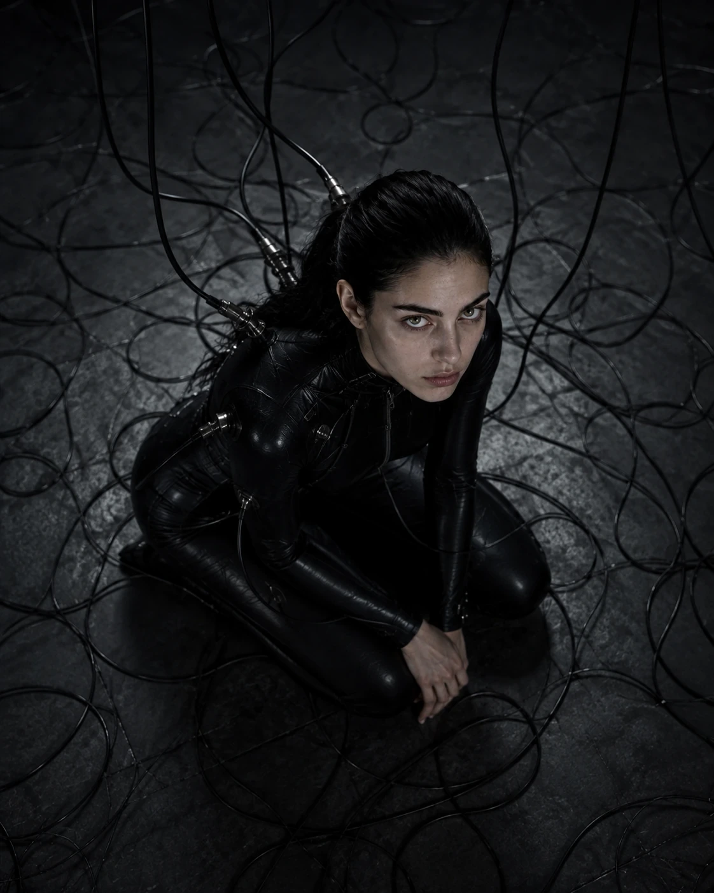
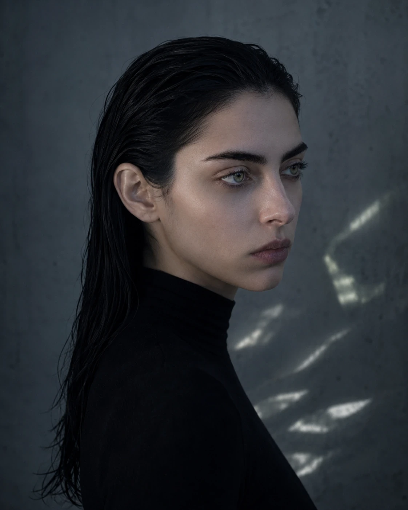

Às vésperas de um álbum de 29 faixas, falamos sobre a reação de artistas à inteligência artificial, direitos, autoria, composição, excesso e o disco em que AMORFA finalmente deixa de olhar tanto para quem foi embora e começa a olhar para quem ficou.
AMORFA / Edição Digital 03 Tratado · 29 faixas
Entrevista 03 / Arte, autoria e 29 faixas
A parte mais desconfortável.
R. J. Wolf entra na parte mais desconfortável da história de AMORFA. Entre a guerra cultural em torno da IA e o lançamento mais íntimo do projeto, a conversa deixa de perguntar apenas como AMORFA é feita e começa a perguntar por que ela merece existir.
FormatoEntrevista crítica
Próximo álbum29 faixas
EixoAutoria / IA / intimidade
EdiçãoEdição Digital 03
Existe uma pergunta que acompanha AMORFA desde que a tecnologia usada em sua realização deixou de ser detalhe de bastidor e passou a participar da recepção: quanto dessa obra pertence realmente a R. J. Wolf?
A pergunta é incômoda. Também é legítima.
Em 2026, a música vive uma disputa menos simples do que “artistas contra máquinas”. Criadores pressionam por consentimento, proteção de voz e identidade, remuneração e transparência; ao mesmo tempo, ferramentas generativas já fazem parte da prática de artistas independentes. AMORFA ocupa exatamente o ponto onde essas duas realidades colidem.
E agora há outro dado inconveniente: o próximo lançamento tem 29 faixas.
O conflito em 2026
O debate público já não trata toda utilização de IA como uma única categoria. Em julho de 2026, organizações da música anunciaram uma iniciativa de rotulagem que distingue gravações “AI-generated” e “AI-assisted”, enquanto campanhas de direitos continuam pressionando por autorização para usos de voz, imagem e obras de artistas.
Essa distinção não resolve treinamento, remuneração ou deslocamento de trabalho. Mas torna mais difícil sustentar a falsa escolha entre “qualquer IA é fraude” e “qualquer uso tecnológico é aceitável”.
Contexto editorial: Human Artistry Campaign · RIAA / iniciativa de transparência em gravações com IA.
“Eu sou artista. E uso IA.”

AMORFA / Edição Digital 03 / “Sob a Superfície”
“Você não pode querer os dois lados.”
A discussão em torno de inteligência artificial na música deixou de ser uma curiosidade tecnológica. Artistas e organizações do setor pressionam por consentimento, proteção de voz e identidade, transparência e regras para o uso de obras no desenvolvimento de sistemas generativos. Ao mesmo tempo, músicos independentes já incorporaram essas ferramentas à criação.
AMORFA existe exatamente dentro dessa colisão.
Você diz defender os direitos dos artistas e usa uma tecnologia que muitos artistas veem como ameaça direta. Por que isso não é hipocrisia?
Porque defender uma ferramenta não me obriga a defender tudo que empresas, usuários ou mercados fazem com ela.
Se alguém usa a voz ou a identidade de uma artista sem autorização, eu sou contra. Se artistas exigem transparência e capacidade real de negociação sobre o próprio trabalho, isso merece ser levado a sério.
Nada disso me obriga a concluir que inteligência artificial não possa participar de uma obra artística.
É uma separação muito conveniente para você.
É.
Coisas convenientes também podem ser verdadeiras. [risos]
Você entende por que um músico olha para alguém produzindo dezenas de faixas com ferramentas generativas e pensa: “esse é exatamente o problema”?
Entendo.
Especialmente quando alguém passou anos construindo uma habilidade e vê uma máquina aproximar parte daquele resultado em segundos.
Seria desonesto fingir que isso não tem peso.
Então existe substituição.
Existe potencial de substituição. Existe deslocamento de trabalho.
Também existe criação que provavelmente não aconteceria sem essas ferramentas.
O debate fica ruim quando alguém exige uma resposta capaz de apagar metade dessa realidade.
Você quer liberdade tecnológica e proteção para artistas. Não dá para querer os dois lados.
Eu quero exatamente os dois.
Inovação que exige que artista abra mão de identidade, voz ou capacidade de negociar não me interessa.
Proteção que declare qualquer ferramenta nova artisticamente ilegítima também não.
AMORFA / Edição Digital 03 / “Sob a Superfície”
29 músicas. No pior momento possível.
O próximo lançamento amplia deliberadamente o problema. Tratado da Decadência e Ascensão das Formas chega com 29 faixas — uma dimensão que, na era da abundância algorítmica, pode ser lida tanto como ambição quanto como incapacidade de parar.
Vinte e nove músicas. No pior momento possível para convencer alguém de que IA não produz excesso.
[risos]
Sim. O timing é péssimo.
Por que eu deveria interpretar isso como ambição artística e não como ausência de limite?
Você não deveria interpretar antes de ouvir.
Essa é justamente a cobrança. Se as 29 existem só porque era fácil produzir 29, o disco fracassou.
Por que existem 29?
Porque esse projeto acumulou matéria durante muito tempo e mudou de função várias vezes.
Não nasceu como um álbum de 29 faixas. Nem nasceu com a ambição que tem hoje.
Qual era a ambição inicial?
Muito menor.
Eu tinha escrita privada, fragmentos, ideias que nunca tinham sido pensadas como repertório. O primeiro impulso era quase literal: como seria ouvir isso?
AMORFA ainda não tinha a dimensão que ganhou depois.
Então a arquitetura veio depois.
Veio do próprio acúmulo.
Algumas músicas se organizavam em torno de pessoas específicas. Outras continuavam funcionando quando a pessoa saía da cena.
Essas eram mais perigosas para mim.
Por quê?
Porque o problema permanecia.

AMORFA / Edição Digital 03 / “Sob a Superfície”
O projeto perdeu o plano.
AMORFA começou como uma possibilidade de realização. Depois ganhou voz, rosto, catálogo, linguagem e uma autonomia estética que não existiam no impulso inicial. Wolf descreve essa mudança sem tentar reorganizá-la retrospectivamente como destino.
Em que ponto o projeto escapou do plano inicial?
Muito cedo.
Você perdeu o controle?
Perdi o plano. Não o controle.
Qual é a diferença?
Controle é conseguir decidir o que entra, o que sai e o que está errado.
Plano é saber antes onde aquilo vai terminar.
O primeiro eu ainda tento exercer. O segundo eu provavelmente nunca tive.
AMORFA começou como meio e virou objeto.
Sim.
No começo ela carregava material que já existia. Depois começou a mudar a maneira como eu escrevia.
A personagem mudou o autor.
Provavelmente.
Isso soa pretensioso.
Muito.
Ainda pode ser verdade. [risos]
AMORFA / Edição Digital 03 / “Sob a Superfície”
O disco em que o ex sai de cena.
Os quatro discos públicos de AMORFA frequentemente colocam outra pessoa no campo de visão: alguém desejado, perdido, ampliado, acusado, transformado em evidência ou reduzido pela memória. Tratado desloca o centro. Relações continuam deixando resíduos, mas a investigação passa por identidade, corpo, redução, sobrevivência, memória e pelos mecanismos que continuam funcionando quando já não há ninguém para culpar.
Você chama Tratado de seu disco mais íntimo. Os anteriores já expunham relações muito íntimas. O que mudou?
Nos outros eu ainda conseguia apontar.
Aqui fica mais difícil.
Apontar para alguém.
É.
Você pode escrever cem músicas sobre quem te machucou e ainda encontrar uma forma sofisticada de evitar você mesmo.
Foi isso que você fez?
Às vezes.
Os discos anteriores eram fuga?
Algumas músicas eram. Outras eram enfrentamento real.
Eu não quero diminuir os discos anteriores para valorizar este.
A diferença é a pergunta. Antes aparecia muito “o que essa pessoa fez comigo?”. Aqui aparece mais “o que continuou funcionando em mim depois que a pessoa foi embora?”.
Então não é um disco sobre ex.
Não no mesmo sentido.
Existem restos de relações porque eu não nasci outra pessoa entre um álbum e outro.
Mas ninguém específico precisa sustentar o disco.
29
Tratado da Decadência e Ascensão das Formas
Uma obra em vinte e nove movimentos sobre descida, decomposição e recomposição — identidade tratada como matéria sujeita a pressão, corte e mudança de forma.
01Limiar
02Os Portões de Hades
03A Ânfora
04Simbionte
05O Arranjo do Submundo
06Ritual de Ascensão (Interlúdio)
07Erro Original
08O Quarto de Sempre
09A Sutura Invisível
10O Mapa da Subida
11O Portal Invertido (Interlúdio)
12Pó Sem Jardim
13Fantasmogênese
14O Fim das Formas
15Matéria Instável (Interlúdio)
16Nova Massa
17Translúcida
18A Costura e o Corte
19Sedimento
20Onde Se Guarda o Que Não Existe Mais
21Gravidade Morta (Interlúdio)
22Campo Nulo
23Vidro Quente
24O Devorador
25Dose de Impulso
26Caber no Mínimo
27Achados e Perdidos
28Baixa Resolução
29Sem Mais Nomes nas Mãos
O que as 29 faixas estão tentando tocar.
Alguns títulos deixam esse deslocamento evidente. Erro Original aproxima aquilo que parece competência da necessidade que a produziu. O Quarto de Sempre reduz a escala até um espaço doméstico. Caber no Mínimo trata da própria redução para ocupar um limite. Achados e Perdidos transforma identidade em coisa extraviada; Baixa Resolução trabalha a ideia de continuar funcional depois de perder detalhe. No fim, Nenhum Nome Sobe Comigo separa o que pertence ao sujeito daquilo que continuará no fundo.
O que existe em Erro Original que não existia nos discos de relacionamento?
Uma suspeita sobre coisas que eu chamava de qualidade.
Funcionar. Aguentar. Permanecer. Ser útil. Continuar.
Por fora isso parece virtude. A pergunta é quanto custou aprender algumas delas.
E O Quarto de Sempre?
É importante porque o disco pode construir imagens enormes e depois voltar para um quarto, uma cadeira, uma página.
Eu gosto quando a escala desaba.
Se tudo permanece simbólico o tempo inteiro, o símbolo vira decoração.
Caber no Mínimo parece cruel.
É.
Existe uma violência muito silenciosa em aprender a diminuir a própria forma até ela caber no espaço permitido.
Achados e Perdidos quase trata o “eu” como objeto.
Porque às vezes identidade é experimentada assim.
Você percebe que passou muito tempo sendo catalogado pelas necessidades de outras pessoas e precisa descobrir o que ainda é seu.
E por que terminar com Nenhum Nome Sobe Comigo?
Porque depois de carregar tanta gente, tanta interpretação e tanta dívida emocional, eu queria uma pergunta mais simples: o que realmente precisa subir?
Não é uma música de vingança.
É separação de matéria.
AMORFA / Edição Digital 03 / “Sob a Superfície”
Terapia não é automaticamente música.
A intimidade do material não garante qualidade artística. Wolf insiste nisso justamente quando a conversa ameaça transformar a origem autobiográfica em selo de autenticidade.
Existe uma crítica fácil a projetos autobiográficos: terapia não é automaticamente arte.
Concordo.
Então por que alguém deveria ouvir a sua?
Não deveria por obrigação.
A experiência ser importante para mim não cria valor estético sozinha.
Onde começa a composição, então?
Quando a necessidade de dizer alguma coisa encontra uma forma que continua interessante mesmo para quem não sabe quem eu sou.
Às vezes a frase que foi mais importante na vida é justamente a que precisa sair da música.
Sinceridade é superestimada?
Muito.
Pessoa sincera também escreve música ruim.
O que mudou na sua maneira de compor?
Hoje eu penso a palavra junto com a voz e com o som.
Uma frase ótima no papel pode morrer cantada. Uma palavra comum pode ficar enorme na nota certa.
Eu reescrevo ouvindo. A produção pode alterar uma linha; uma linha pode obrigar o arranjo a mudar.
O que costuma vir primeiro?
Não existe mais uma única porta.
Pode ser uma frase, um ritmo de fala, uma imagem, um comportamento vocal, uma linha de baixo, às vezes só uma sensação física de que a música precisa empurrar ou recuar.
Você escreve uma letra pronta e entrega para a IA?
Esse modelo de trabalho me interessa cada vez menos.
Canção não é texto despejado sobre uma gravação.
A boca interfere. A duração da vogal interfere. O silêncio interfere.
AMORFA / Edição Digital 03 / “Sob a Superfície”
Se a máquina participa, de quem é a música?
A pergunta de autoria fica mais difícil quando o processo não cabe na oposição simples entre “humano fez” e “máquina fez”. Wolf separa origem da escrita, decisão artística e realização sonora — sem reivindicar uma performance que não executou.
Onde a inteligência artificial entra na composição?
Depende da etapa.
Mas existe uma distinção importante para mim: as letras partem de mim.
Ferramentas podem participar de análise, confronto, alternativas, testes e realização sonora. Isso não transforma cada etapa no mesmo tipo de autoria.
Uma IA pode sugerir uma palavra.
Pode.
Um editor também pode. Um colaborador pode. Uma ferramenta de rima pode.
A pergunta não se resolve contando quem pronunciou cada sílaba primeiro.
Conveniente de novo.
Você está muito apegado a essa palavra. [risos]
Se uma máquina participa, por que você continua reivindicando autoria?
Porque participação não é autoria integral.
Eu respondo pela escrita, pela composição e pelas decisões que constituem aquela obra.
Não reivindico tocar uma bateria que não toquei nem uma emissão vocal física que não executei.
Então se eu tirar a IA, sobra o quê?
As letras. As ideias musicais. As melodias e intenções. As decisões. A experiência que tornou aquela música necessária.
E sobra um projeto muito mais caro e difícil de realizar.
Mas não AMORFA como conhecemos.
Provavelmente não.
A tecnologia é constitutiva da forma que o projeto adquiriu. Eu não vejo razão para esconder isso.
“Eu sou artista. E uso IA.”
A frase parece simples até ser colocada dentro de uma disputa em que cada lado frequentemente exige exclusividade moral.
Em algum momento essa guerra cultural exige lado. Artistas de um lado; empresas e ferramentas de IA do outro. Onde você fica?
Essa divisão já começa errada.
Eu sou artista. E uso IA.
Muitos artistas diriam que esse “e” é o problema.
Eu sei.
Você quer aprovação deles?
De artistas que admiro? Claro.
Seria mentira dizer que não.
E se nunca vier?
Eu continuo trabalhando.
Quais preocupações deles você considera legítimas?
Consentimento. Voz. Identidade. Crédito. Remuneração. Condições de trabalho. Transparência.
Eu não preciso ridicularizar nenhuma dessas coisas para defender meu direito de criar com uma ferramenta.
E o que você rejeita?
A ideia de que o instrumento usado decide sozinho se uma obra pode ou não ser arte.
Ética e qualidade são perguntas diferentes?
Sim.
Uma obra pode ser artisticamente interessante e ter um processo eticamente questionável. Outra pode ter um processo impecável e ser péssima.
Eu preferia que essas coisas coincidissem. O mundo não ajuda.
AMORFA / Edição Digital 03 / “Sob a Superfície”
A zona cinzenta também beneficia você.
Nenhuma defesa séria da ferramenta atravessa 2026 sem chegar ao treinamento dos sistemas, à origem dos dados e ao controle de identidade. É aqui que Wolf abandona a tentativa de parecer confortável.
E se a própria ferramenta depender de usos que os artistas não autorizaram?
Aí existe uma questão que precisa de regras, transparência e negociação muito melhores do que tivemos até agora.
Isso parece resposta de relações públicas.
Porque você quer que eu resolva direito autoral internacional numa entrevista de música. [risos]
Quero saber se isso muda sua decisão de usar.
Muda o que eu quero apoiar.
Eu quero modelos mais transparentes, licenciamento quando for necessário, capacidade real de consentimento e proteção forte para voz e identidade.
Mas você continua usando enquanto a discussão não está resolvida.
Sim.
Então você aceita uma zona cinzenta que beneficia você.
Aceito que participo de uma zona cinzenta que também me beneficia.
Isso é diferente de fingir que ela é boa.
29 faixas também podem ser vaidade.
Você realmente acredita que alguém precisa de 29 músicas suas de uma vez?
Não. [risos]
Então por que lançar?
Porque “precisar” seria uma régua muito estranha para arte.
Não desvie. Vinte e nove músicas podem ser incapacidade de editar.
Podem.
São?
A dimensão tem função no álbum. E eu também precisei aprender onde dimensão vira excesso.
As duas perguntas existiram durante a montagem.
Você cortou coisas?
Sim.
Ainda sobraram 29.
Esse é o dado incriminador. [risos]
Qual é a defesa?
Não são 29 tentativas de single.
Existem passagens, peças muito curtas, músicas densas e outras quase vazias.
Eu queria que a duração tivesse sensação de travessia, não de playlist.
O streaming não favorece esse tipo de escuta.
Eu sei.
Mas comportamento médio de plataforma não precisa escrever todos os discos.
AMORFA / Edição Digital 03 / “Sob a Superfície”
O álbum mais íntimo usa uma voz sem corpo.
Há uma ironia difícil de ignorar. Seu álbum mais íntimo é entregue por uma voz sintética.
Eu sei.
Isso não cria uma camada de covardia? Você se expõe e coloca outra face e outra voz na frente.
Cria distância.
Covardia eu deixo para quem ouvir decidir.
AMORFA protege você.
Sim.
Então a vulnerabilidade fica mais barata.
[pausa]
Talvez algumas coisas fiquem menos arriscadas.
Uma intérprete humana colocaria o próprio corpo ali.
E isso tem um custo que eu não quero fingir que é idêntico.
Uma pessoa entra no microfone com história, limites, cansaço, medo, ego. A presença humana muda a música.
Então por que ainda chamar o álbum de íntimo?
Porque intimidade está na matéria que entrou.
O risco fisiológico da performance é outra forma de exposição.
Eu não quero confundir as duas.
O disco não pode virar peça de defesa.
O que você quer provar com este álbum? Que você é compositor?
Não.
Que IA pode produzir arte?
Também não.
Que AMORFA é mais do que tecnologia?
Não deveria precisar de 29 músicas para isso.
Então o que você quer provar?
Nada.
Nada?
Se o disco precisa funcionar como peça de defesa num julgamento sobre IA, eu já perdi.
Eu quero que ele seja ouvido como disco. Depois podemos brigar sobre o resto.
Você sabe que muita gente vai ouvir o método antes da música.
Sei.
Eu não controlo a ordem em que alguém decide me julgar.
Você está preparado para alguém chamar 29 faixas de “AI slop” sem ouvir o conjunto?
Não sei se quem chama de slop costuma chegar à faixa 29. [risos]
Defensivo.
Sim.
AMORFA / Edição Digital 03 / “Sob a Superfície”
Quem mais aparece no disco?
Depois de quatro discos frequentemente ocupados por outras pessoas, você constrói 29 faixas e diz que este é o mais íntimo. Quem é a pessoa que mais aparece nele?
[pausa]
Eu.
Você gostou de encontrá-la?
Nem sempre.
Ela gostou de ser encontrada?
Essa eu ainda não sei.
E AMORFA?
AMORFA nasceu justamente no intervalo entre essas duas respostas.
A máquina continua visível. Só não é mais a coisa mais íntima na sala.
A terceira grande conversa sobre AMORFA termina num lugar diferente das duas anteriores. A tecnologia continua no centro, mas já não consegue explicar o projeto sozinha.
Wolf reconhece o conflito em vez de tentar neutralizá-lo: realização sintética pode deslocar trabalho; uma voz sem corpo oferece proteções que uma intérprete humana não possui; a abundância técnica pode gerar excesso; e participar de uma zona regulatória ainda em disputa também produz conveniências para quem cria.
A defesa permanece: reconhecer esses conflitos não torna a ferramenta artisticamente inválida. Do mesmo modo, usar a ferramenta não apaga direitos de artistas, nem transforma consentimento, identidade, voz e crédito em obstáculos ao futuro.
Tratado da Decadência e Ascensão das Formas desloca essa discussão para dentro da obra. O que começou como tentativa de dar som a uma escrita privada chega a um álbum de 29 faixas interessado menos em reconstruir outras pessoas e mais em observar o que sobra depois delas.
Talvez seja essa a metamorfose mais importante de AMORFA até aqui: a máquina continua visível, mas finalmente não é a coisa mais íntima na sala.